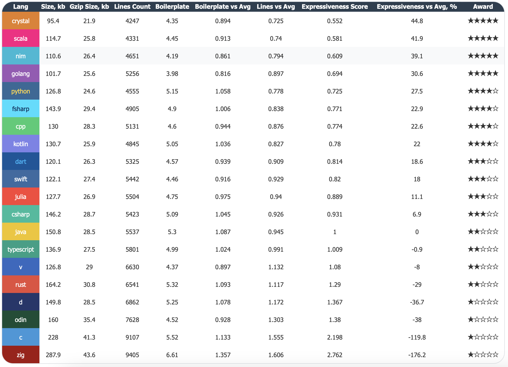

I recently completed a large experiment: I took a benchmark suite written in Crystal (51 tests covering sorting, parsing, algorithms, compression) and ported it to 19 other programming languages with the help of an LLM. The process took about two months. My original goal was to compare performance and memory usage across languages — and the results were intriguing, sometimes unexpected - LangArena.
Along the way, I collected a lot of data — code size, compilation times, and so on. One of the tables I put together was an Expressiveness metric. After a while, I realized this metric was unexpectedly revealing.

Table legend
This table compares how concisely different programming languages express the same program.
At first glance, Expressiveness looks like a simple measure of code size. The higher the percentage, the fewer lines you need to write. Crystal requires 44.8% less code than the average, while Zig requires 176.2% more.
But if you look closer, a question emerges: are we measuring brevity or expressiveness? Brevity is about the number of characters. Expressiveness is about how clearly an idea is conveyed. They are not the same thing.
The table includes a column called Boilerplate — the ratio of raw source code size to its gzipped size. Gzip compresses repeated patterns. If a language forces you to write the same structures over and over, gzip will squeeze them, but you still had to type them.
Here are the numbers:
That's a 50% difference. This isn't abstract — it's real extra code that you (and the LLM) have to deal with.
A critic might say: "Rust writes more lines, but each line carries meaningful information — Result, Option, lifetimes. That's not boilerplate, it's safety."
That's fair. And here's the important part: the metric already accounts for that.
Gzip only compresses repetition. Unique constructs like Result, Option, and lifetimes remain in the compressed output. They increase the gzipped size, which lowers the boilerplate ratio.
Compare Rust and Zig:
Rust's gzipped size is noticeably smaller than Zig's, and its source is smaller too. That's because Rust has fewer repetitive formalities and more unique, meaningful information.
So the metric doesn't penalize Rust for its safety features. It penalizes languages with lots of repetitive ceremony that adds no new information.
Look at the JVM family:
This matches every developer's intuition. The metric captures differences between languages on the same platform cleanly.
You can argue about whether to call it "expressiveness." Maybe "code density" or "writing efficiency" is more accurate. The name doesn't matter.
What matters is that this metric shows how much code you have to write to solve a problem. And the more code you write, the:
After working with this data for a while, I noticed something surprising: the Expressiveness table correlates almost perfectly with my experience porting these languages using an LLM.
The higher a language sits in the table, the easier it was to work with.
Scala, Nim, Go were among the easiest. The LLM would generate code, I'd run it, and it would just work. Sometimes the AI produced suboptimal solutions — I'd review, ask for tweaks, and things would quickly fall into place. Even when it took multiple iterations, the process was smooth and pleasant.
The languages at the bottom of the table were a different story.
Odin, C, Zig were genuinely difficult. Massive codebases, the LLM constantly losing context. Run the code — segfault. Track down the cause — find five more bugs. Fix them — new ones appear.
Zig was the hardest by far. Not only is the codebase three times larger than Crystal's, but the API broke significantly in version 0.15. The LLM didn't know this — it generated code for the old version, which looked correct but wouldn't compile. Porting to Zig was a constant struggle.
To understand why the difference is so stark, compare the same test — Sort::Self (array sort) — in two languages.
type SortSelf struct {
BaseBenchmark
data []int
result uint32
}
func (s *SortSelf) Prepare() {
size := int(s.ConfigVal("size"))
s.data = make([]int, size)
for i := 0; i < size; i++ {
s.data[i] = NextInt(1_000_000)
}
}
func (s *SortSelf) Run(iteration_id int) {
s.result += uint32(s.data[NextInt(len(s.data))])
arr := make([]int, len(s.data))
copy(arr, s.data)
sort.Ints(arr)
s.result += uint32(arr[NextInt(len(arr))])
}
func (s *SortSelf) Checksum() uint32 {
return s.result
}27 lines. All the logic is right there. The LLM can easily hold this in context. It understands what's happening and can generate similar code without getting lost in details.
const std = @import("std");
const Benchmark = @import("benchmark.zig").Benchmark;
const Helper = @import("helper.zig").Helper;
pub const SortSelf = struct {
allocator: std.mem.Allocator,
helper: *Helper,
data: std.ArrayList(i32),
result_val: u32,
const vtable = Benchmark.VTable{
.prepare = prepareImpl,
.run = runImpl,
.checksum = checksumImpl,
.deinit = deinitImpl,
};
pub fn init(allocator: std.mem.Allocator, helper: *Helper) !*SortSelf {
const self = try allocator.create(SortSelf);
errdefer allocator.destroy(self);
self.* = SortSelf{
.allocator = allocator,
.helper = helper,
.data = .{},
.result_val = 0,
};
return self;
}
pub fn deinit(self: *SortSelf) void {
self.data.deinit(self.allocator);
self.allocator.destroy(self);
}
pub fn asBenchmark(self: *SortSelf) Benchmark {
return Benchmark.init(self, &vtable, self.helper, "Sort::Self");
}
fn prepareImpl(ptr: *anyopaque) void {
const self: *SortSelf = @ptrCast(@alignCast(ptr));
const allocator = self.allocator;
self.data.clearAndFree(allocator);
self.result_val = 0;
const size_val = self.helper.config_i64("Sort::Self", "size");
const size = @as(usize, @intCast(size_val));
self.data.ensureTotalCapacity(allocator, size) catch return;
self.helper.reset();
for (0..size) |_| {
const val = self.helper.nextInt(1_000_000);
self.data.append(allocator, val) catch return;
}
}
fn testSort(self: *SortSelf, allocator: std.mem.Allocator) ![]i32 {
const arr = try allocator.alloc(i32, self.data.items.len);
@memcpy(arr, self.data.items);
if (arr.len > 0) {
std.sort.pdq(i32, arr, {}, std.sort.asc(i32));
}
return arr;
}
fn runImpl(ptr: *anyopaque, _: i64) void {
const self: *SortSelf = @ptrCast(@alignCast(ptr));
const allocator = self.allocator;
const data = self.data.items;
var arena = std.heap.ArenaAllocator.init(allocator);
defer arena.deinit();
const arena_allocator = arena.allocator();
if (data.len > 0) {
const idx1 = @as(usize, @intCast(self.helper.nextInt(@as(i32, @intCast(data.len)))));
self.result_val +%= @as(u32, @intCast(data[idx1]));
}
const sorted = self.testSort(arena_allocator) catch return;
if (sorted.len > 0) {
const idx2 = @as(usize, @intCast(self.helper.nextInt(@as(i32, @intCast(sorted.len)))));
self.result_val +%= @as(u32, @intCast(sorted[idx2]));
}
}
fn checksumImpl(ptr: *anyopaque) u32 {
const self: *SortSelf = @ptrCast(@alignCast(ptr));
return self.result_val;
}
fn deinitImpl(ptr: *anyopaque) void {
const self: *SortSelf = @ptrCast(@alignCast(ptr));
self.deinit();
}
};91 lines. Three times more.
Beyond the sorting logic itself, this code includes:
All of this infrastructure is just to sort an array. The actual logic is maybe 10% of the code. The rest is ceremony the language requires.
When a neural network works with code like this:
defer or a misused allocator. The LLM doesn't see these problems — it generates code that looks right but fails in practice.The Expressiveness table reflects this directly. Higher-ranked languages mean fewer formalities, easier AI interaction, and faster development.
A large codebase isn't just hard for AI — it's hard for humans too.
First, a new developer (or reviewer, or curious reader) opens the code and simply cannot read it. They drown in allocators, vtables, error handling. To understand that the program just sorts an array, they have to fight through 90 lines of ceremony.
Second, and perhaps worse: you open your own code six months later and don't understand what it does. The logic, once clear, is buried under layers of infrastructure. You stare at allocators and defers and think: "Why did I write this? What is happening here?"
In Go, this doesn't happen. 27 lines — everything in plain sight. Clear now, clear in a year, clear to anyone.
In Zig, the code works, but understanding is a constant cost. That's a real price to pay for control.
Verbosity isn't unique to Zig. C, D, Odin — all the languages at the bottom of the table share the same pattern. Lots of code, lots of ceremony, logic buried in details.
Yes, with perfect discipline — thorough comments, rigorous reviews, constant refactoring — you can keep such code readable. You can help newcomers. You can remind yourself what you meant six months ago.
But the question is: is it worth it?
In languages at the top of the table, readability comes for free. Less code, logic in plain sight, comments often unnecessary. In languages at the bottom, you have to pay for readability — with effort, discipline, review time, documentation.
In 2026, when much of our code is written or assisted by LLMs, this question becomes even sharper. An LLM doesn't "maintain code culture." It just generates formalities. Cleaning up after it is on you.
So when choosing a language, it's fair to ask: am I ready to pay this price? Or would I rather work in a language where simplicity and readability are built-in?
The Expressiveness table turned out to be more than just a curiosity. It closely matches my experience porting these benchmarks with an LLM. The higher a language ranks, the easier it was to work with, the faster development went, the fewer problems appeared.
So this metric has practical value: if you plan to use LLMs in your workflow (and these days, who doesn't?), choose languages from the top half of the table.
In 2026, with AI writing a growing share of our code, LLM-friendliness is as important as performance or ecosystem. And now we have a metric that helps measure it.